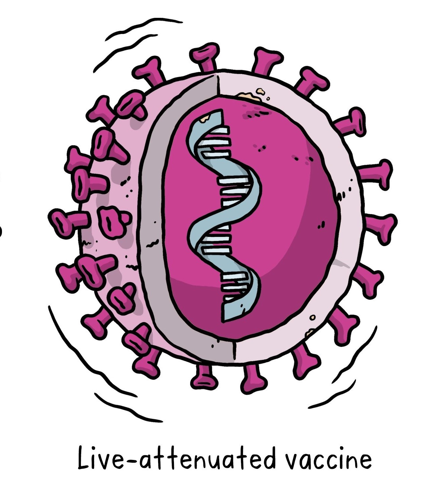

Can you still get infected even if you're vaccinated?
Yes, the chances of getting infected with COVID-19 is still possible, but the chance of going into critical condition is slimmer. At most, it will be a low infection to mild infection case. This case is called a breakthrough infection wherein a fully vaccinated person is infected.
When to seek emergency care if infected by COVID-19?
It is advisable to call your Local Government or doctor as soon as possible and striclty follow their instructions. Avoid outdoors as much as possible, public transportation, follow proper social distancing. And isolate yourself in a room, far from your family and wait for further instructions from your local government/doctor.
Do's and Don'ts when in a public area
-Do wash your hands for at least 20 seconds serveral times per day.
When to get booster dose?
After taking the second dose, individuals should wait for 8 months before taking a booster shot.
How quickly could covid-19 vaccines stop the pandemic?
It depends on the effectiveness of vaccines, how quickly they are aprroved, manufactured, and delivered. It will take longer as COVID-19 vaccines will not be 100% effective.
Will the vaccines protect me from covid-19?
COVID-19 vaccines are effective at protecting you from COVID-19, especially sever illness and death.
What are the benefits of getting vaccinated?
The benefits of getting vaccinated are preventing hospitalization, and death.
Who should get vaccinated?
Health workers have a high risk of exposure and older people should be prioritized for vaccination.
Can I stop taking safety precautions after being vaccinated?
No, you should still follow the safety precautions as you are not 100% immune of COVID-19.
Should I be vaccinated if I have been infected with covid-19?
Waiting for a few weeks is recommended if you have been infected by COVID-19. You should have no symptoms at all and you should feel perfectly well when you take your vaccination to prevent health workers at risk.
What are the side effects of vaccines in men and women?
The mild side effects include soreness, headache, fatigue, diziness, chills, and nausea. Also women have been reported that they have more side effects from COVID-19 vaccine than men.
Does the side effect imply that the vaccine is working?
Common and mild side effects are a good thing when vaccinated. It shows that the vaccine is working and experiencing no side effects doesn't mean the vaccine is ineffective because everybody responds differently.
I have been vaccinated and I had not felt any of the common side effects
The COVID-19 vaccine is still working even without side effect. It's likely related to the immune system and its response as to why there might be no reaction. Women and younger people are more likely to experience reactions after the vaccine.
Can people get COVID-19 from pets or other animals?
According to Centers for Disease Control and Prevention
"At this time, there is no evidence that animals play a significant role in spreading SARS-CoV-2, the virus that causes COVID-19, to people. More studies are needed to understand if and how different animals could be affected by SARS-CoV-2".
What are the early symptoms of COVID-19?
Once an individual has contracted the virus, it can take 2-14 days for symptoms to show. The average incubation period is roughly 5-6 days. According to Centers for Disease Control and Prevention (CDC), a person with COVID-19 can experience
a range of symptoms, often including a dry cough and shortness of breath. The most common symptoms are fever, dry cough, and tiredness, muscle pain, headache, sore throat, loss of taste or smell.
Can you contract the virus after receiving the 1st vaccine dose?
Yes, a person will achieve immunity after gaining the second dose of a two shot vaccine. Unless the vaccine that you have chosen is ohnson & Johnson that only require 1 shot.
When can I get my 2nd dose of vaccine after contracting CoVid-19 after my 1st dose of vaccine?
10 days after your first symptom has started. If you still have a fever or other symptoms, stay insolation and if symptoms still persist, stay in isolation until 21 days have passed since you started having symptoms.
Will the COVID-19 vaccine provide long-term protection?
According to World Health Organization “Because COVID vaccines have only been developed in the past months, it’s too early to know the duration of protection of COVID-19 vaccines. Research is ongoing to answer this question. However, it’s encouraging that available data suggest that most people who recover from COVID-19 develop an immune response that provides at least some period of protection against reinfection – although we’re still learning how strong this protection is, and how long it lasts.“
What happens if I choose a different vaccine for my second dose?
It is recommended to have the same vaccine as you had the first dose. As of the moment the data about interchanging are insufficient.
What types of vaccines are being developed? and how do they work?
Based on The Gavi Organization
There are 4 types of COVID-19 vaccines:
1. Whole Vaccine
Whole virus vaccines use a weakened (attenuated) or deactivated form of the pathogen that causes a disease to trigger protective immunity to it. There are two types of whole virus vaccines. Live attenuated vaccine and Inactivated vaccine. Both are tried and tested vaccination strategies, which form the basis of many existing vaccines – including those for yellow fever and measles (live attenuated vaccines), or seasonal influenza and hepatitis A (inactivated vaccines). Bacterial attenuated vaccines also exist, such as the BCG vaccine for tuberculosis.
A. Live Attenuated Vaccine : this is a weakened form of the virus, which can still grow and replicate, but does not cause illness.
B. Inactivated Vaccine :it contain viruses whose genetic material has been destroyed by heat, chemicals or radiation so they cannot infect cells and replicate, but can still trigger an immune response.
2. Protein Subunit
3. Nucleic
4. Viral Vector
Viral vector-based vaccines differ from most conventional vaccines in that they don’t actually contain antigens, but rather use the body’s own cells to produce them. They do this by using a modified virus (the vector) to deliver genetic code for antigen, in the case of COVID-19 spike proteins found on the surface of the virus, into human cells. By infecting cells and instructing them to make large amounts of antigen, which then trigger an immune response, the vaccine mimics what happens during natural infection with certain pathogens - especially viruses. This has the advantage of triggering a strong cellular immune response by T cells as well the production of antibodies by B cells. An example of a viral vector vaccine is the rVSV-ZEBOV vaccine against Ebola.